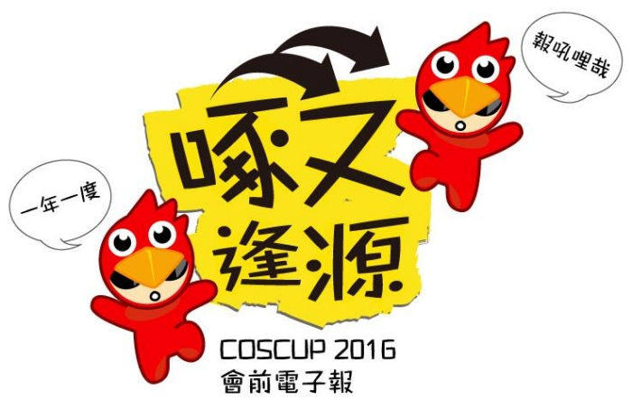

第 1 期
2016 年 7 月 8 日 發行
| Facebook | twitter | Plurk | coscup.org |
從封閉到開源，從個人到社群，我們曾走過很長一段路。如今，邁向 2016 年的 COSCUP，除了延續過往一貫的「分享」精神外，更希望這種精神可以向外擴張、向下延續，成為使未來更好的力量。
今年我們的主題著重在傳承、扎根與跨界三個部分：
扎根方面，希望眾多微小的想法可以逐漸成形、發光；
跨界方面，期望不同領域之間的組合出現令人驚喜的火花；
至於傳承，我們更希冀能將現有的資源分享延續下去，成為更多新生代夥伴的發想基礎。
COSCUP 2016 除了一般議程以外，我們更有工作坊、適合全家大小的親子工作坊，以及unconf、BoF等活動可以參與，讓我們一起來期待這場盛夏饗宴吧！
今年會眾除了領到名牌以外，還會附上一張貼紙，上面會有一些對話內容。
如果腦袋中有源源不絕的點子，不論是否為會眾，都歡迎各位投稿。
徵稿結束後經過內部初選，會在FB上公開票選出4~6個經典句子，票選前兩高票者，可獲得 COSCUP 小啄 VR 眼鏡一組！其他獲選者可獲得 COSCUP 隨身碟一個！我們也會從其餘投稿者及投票者中，分別抽出 2 名贈送 COSCUP 紙膠帶或貼紙簿當作紀念！另外獲選者的句子將會出現在今年的名牌貼紙上！
每次投稿至少一句，至多五句，每句最多15個全型字元。
每人不限投稿次數，但抽獎僅中一次。若有相同投稿內容，以時間先後順序為主。
徵稿日期從 6/27(一) - 7/10(日) 23:59
投稿詳細辦法：http://goo.gl/forms/NdroNAKzLQ1azFM83
今年大會與 Line 合作，COSCUP 將是全亞洲第一個使用 LINE Business Connect 開發對話機器人的 Conference！我們歡迎你來申請最佳寫扣手，詳情辦法將會在近期公告。
如果你想名留青史，歡迎你先準備好你曾經串接過API的成果與程式碼。
我們不限性別年齡，只要你熟 HTTP protocol，這個專案沒有語言限制，歡迎你來挑戰時程和需求（對，我們會給你需求，你會有時程壓力），且 Line 官方會有教練指導。（平日上班時間或是平日晚上地點另外安排）
這次我們還會串接愛迪生開發板，一樣也會幫你安排教練。
如此艱鉅的工作，歡迎你組隊參加，一組名額限制最多 3 名。
如果你對這個專案有興趣、又不想肩負寫扣手的重責，大會另外開放 20 個名額讓你跟 Line 教練學寫串接 API（平日上班時間或是平日晚上地點另外安排）
再說一次，詳情辦法會在近期公佈！
如你有其他問題, 歡迎寫信至：sponsorship@coscup.org
我們會整理問題一次回覆
其他Ｑ＆Ａ
Ｑ：什麼是 line@
Ａ：http://goo.gl/rJJprq
Ｑ：什麼是line partner 官方帳號
Ａ：http://goo.gl/iYco5S
啄又逢源會前快報發行單位：COSCUP 2016 籌備團隊